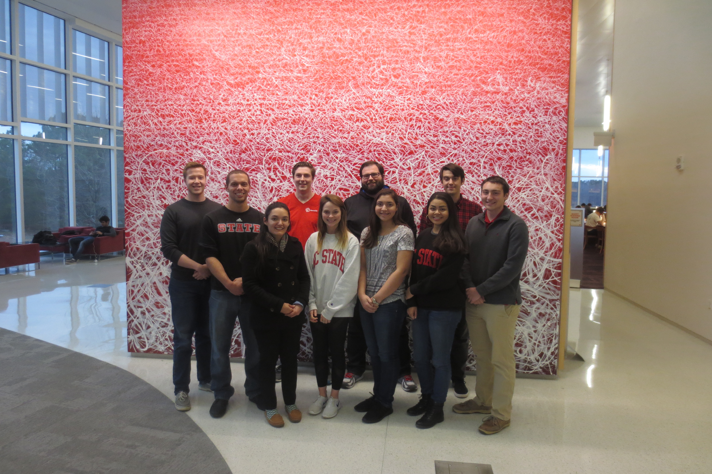
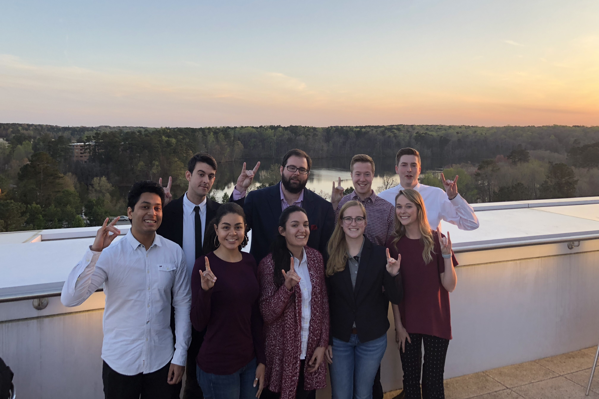
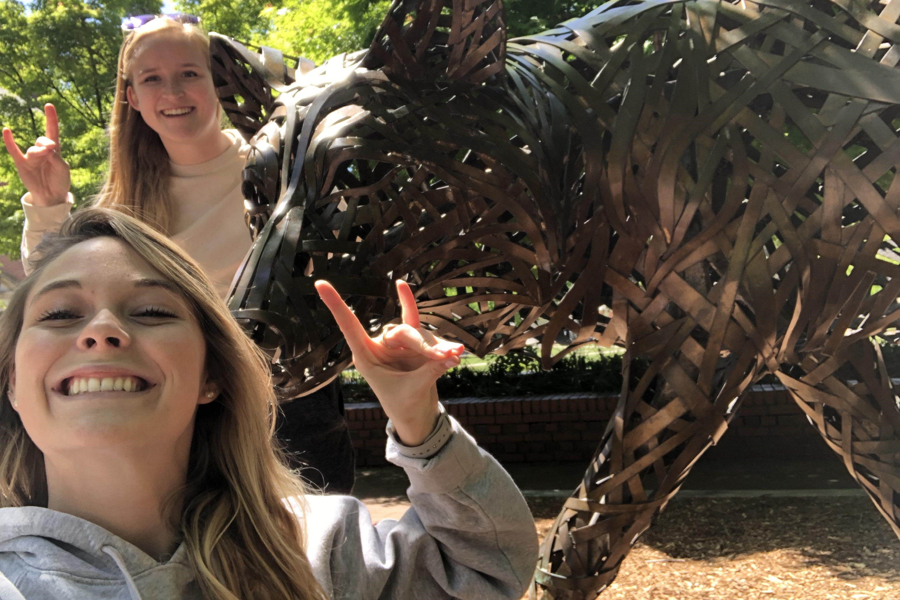
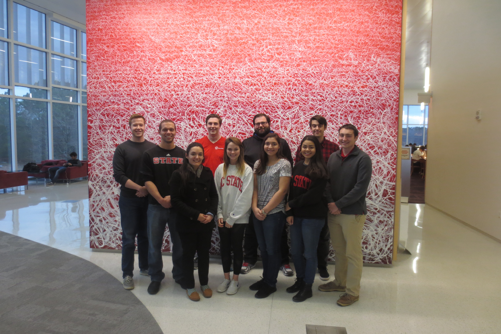
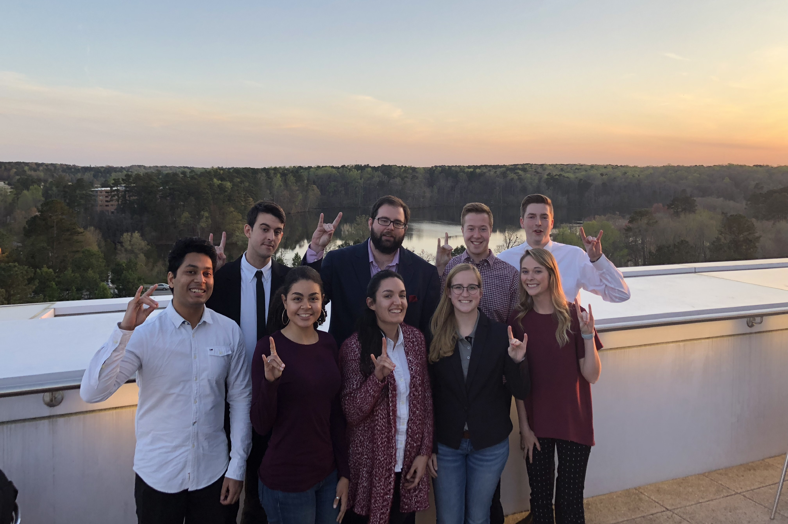
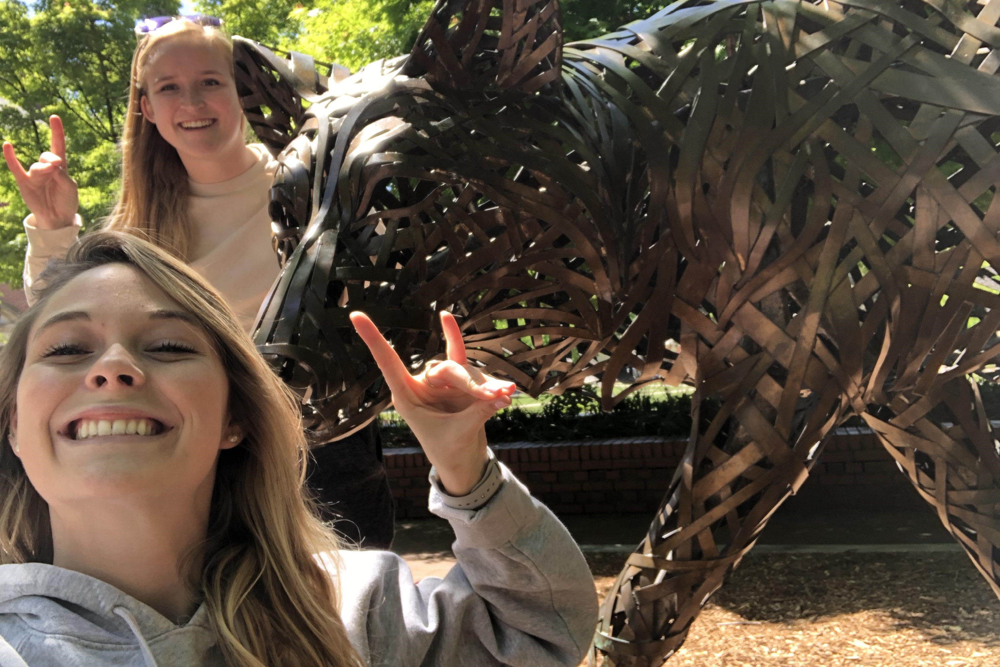
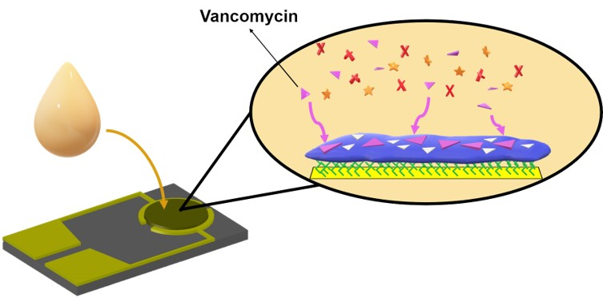

SenseNC 2018
- Madisen Andersen - Undergraduate - Finance: Marketing Concentration - Designed promotional material and spoke with the dean of the Poole College of Management at NCSU to generate support and sponsorship for SenseNC across departments. Authored the Translation Potential section of the results document.
- Alice Di Fazio - Undergraduate - Chemical Engineering - Worked on the chemistry and wrote the Analytical Performance section of results document.
- Chris Fesmire - Masters Candidate - Biomedical Engineering - Conducted in person customer research at 2 different hospitals in the area. After receiving the customer feedback, he then designed the prototype and user experience around the customer comments and requirements recieved. Chris also assisted with the electrical design of the system.
- Sydney Floryanzia - Undergraduate - Chemical Engineering - Worked on the chemistry and authored the Biosensor System and Assay section of the results document.
- Chuck Geddie - Masters Candidate - Biomedical Engineering - Conducted in-person user experience research at two university hospitals, including UNC-Chapel Hill and East Carolina University. Researched possible device configurations, designed and optimized protocol to interface gold electrode and MIP, and taught and oversaw undergraduate researchers performing MIP fabrication and testing.
- Hannah Johnson - Undergraduate - Material Science - Designed promotional material and spoke with sponsors. She also wrote the Novelty and Creativity section of the results document, assisted in writing the translational pitch, and ordered team uniforms.
- Matthew Sabo - Undergraduate - Electrical and Computer Engineering - Programmed device controller, Designed and Implemented LCD graphics, Developed Android application, Built website and supporting web backend
- Calvin Shanahan - Undergraduate - Chemical Engineering - Worked on chemistry, organized SenseNC weekly meetings and communicated with SenseUs organization throughout the year.
- Brendan Turner - Masters Candidate - Biomedical Engineering - Initially researched possible device configurations and chemical compositions for vancomycin detection. Developed, tested, and implemented interface between gold electrode and MIP, performed troubleshooting during device development, and tested device parameters.
- Mike Wilkins - PhD. Candidate - Electrical Engineering - Worked on programming, designed electrical circuit, conducted electrochemical testing, developed microfluidics, spoke with multiple sponsors, interviewed orthopedists, and connected SenseNC to ECE department through numerous meetings and outreach activities.
- Kristina Rivera - Coach and PhD. Candidate - Biomedical Engineering - Created sponsorship letters and spoke with sponsors, organized documents and deliverables, and conducted interviews with UNC Chapel Hill hospital doctors, nurses, and medical students.
- Dr. Michael Daniele - Team Advisor
 





Molecularly Imprinted Polymers (MIPs) 
Molecularly Imprinted Polymers (MIPs) are polymer layers with lock-and-key type indentations embedded into them. When a sample containing the target molecule is introduced to the polymer layer the molecule fits into the indentations in the polymer layer like a lock and key. This bonding can then be measured using electrical signals and correlated to the concentration of the target in the sample.
Advantages of the MIP layer:
- The lock-and-key style provides a high level of specificity for the assay.
- The MIP can be created for a wide variety of different target molecules.
- Bonding promoter peptides can be added to the MIP to increase the effectiveness of the MIP layer.
The Miptide

The Miptide is meant to be portable and easy to operate. It can be run from either wall or battery power and delivers results quickly via the built in display. The assay cartriges containing the sample slide into the front of the device and are fully disposable. After each sample is taken measurement data can also be sent to a mobile device and the cloud.